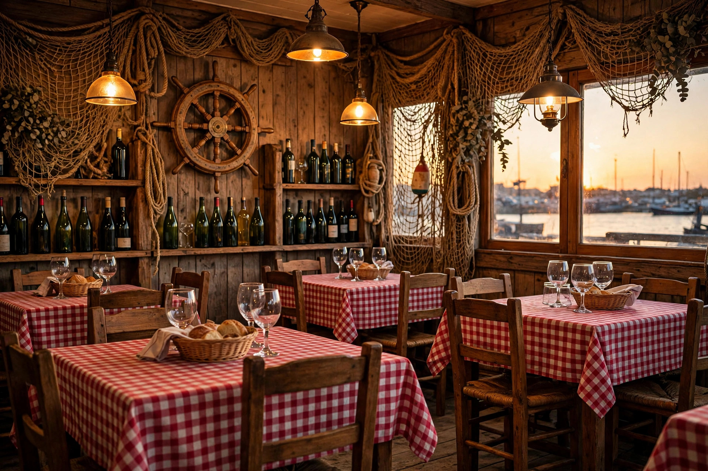
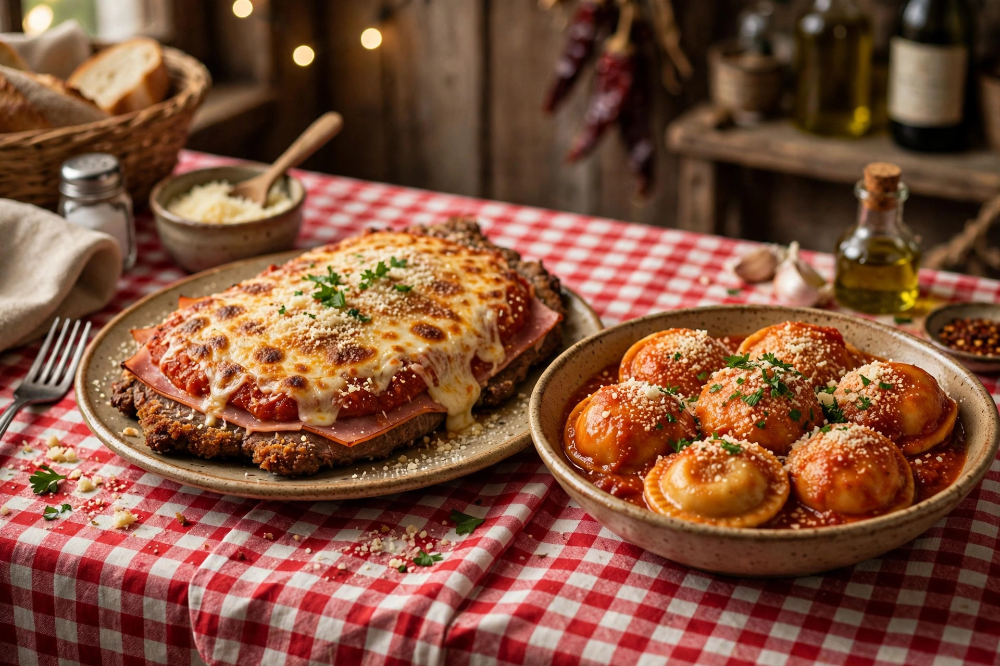

Cantina de mar · Mar del Plata
Quince años de cantina en la esquina de La Rioja y Avellaneda: la pesca del día, los platos generosos para compartir al medio y los mozos de oficio de siempre.
Lunes a sábado · Mediodía y noche
Domingo cerrado
La Rioja 3098 · Esq. Avellaneda

La casa
Lo de Tata nació como homenaje de Lisandro Ciarlotti a su abuelo —el Tata— y se convirtió en un clásico de Mar del Plata: manteles a cuadros, ambientación marinera y una cocina de mar honesta, de cocciones simples que dejan hablar al producto.
«Acá se come como en lo del abuelo: abundante, fresco y sin vueltas.»
Reservas
Un solo canal, sin vueltas: todas las reservas entran por el mismo WhatsApp.
El botón verde de WhatsApp te lleva directo a nuestro número de reservas, sin buscar teléfonos por ningún lado.
Decinos qué día venís, a qué hora y cuántos son. Con eso alcanza.
Te respondemos con la confirmación y listo: llegás y te sentás.
Con reserva te asegurás la mesa… y te ahorrás la fila de la puerta.
Visitanos
La Rioja 3098, esquina Avellaneda
Barrio Chauvín · Mar del Plata
Lunes a sábado
Mediodía y noche
Domingo cerrado
Instagram: @lodetata
La pizarra del día, en nuestras historias.